CS184 Final Project
Report
Iridescent
Rendering
Joy
Chang (3034782362, joychang02@, joyyy26)
Evelyn
Wu (3034524650, evelynpwu@, evelynwu88)
Yuetian
Tang (3034728516, tangyuetian1123@, yuetiantang)
Yin
Deng (3033647998, yindeng@,
yinxudeng)
Final Video: https://drive.google.com/file/d/1cP_QszXRsfydPu_aeMK3TcUmSdcp6WLl/view?usp=sharing
Abstract
In
our final project, we built upon the path tracer we implemented in projects 3-1
and 3-2 and introduced the ability to render iridescent texture by implementing
thin film interference, which gradually changes color when you observe from
different angles. As a result, the rendering under our implementation should reflect
lights more realistically.
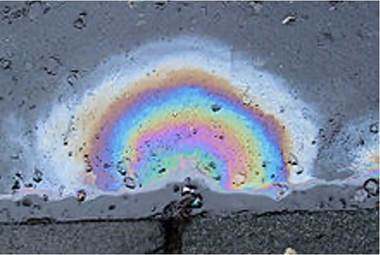
Technical Approach & Results
Refactoring Code
We
used Project 3 as our starter code for the project. We first finished up the
implementation of Microfacet material. We created a new BSDF similar
to the microfacet BSDF and modified the Fresnel term to allow iridescent
rendering
Microfacet
Rendering Results
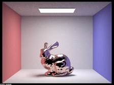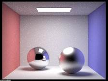
Iridescence Overview
Iridescence
is a very common visual effect as we can see lights interacting with CD’s or
bubbles in a colorful way. Our first step to support iridescence rendering is
to implement thin film interference and accounting for lights with different
wavelengths as if objects were covered in thin films. We also need to account
for both the amount of light rays reflected off the
thin film and the amount transmitted into the internal medium. Then, to make
iridescence rendering of objects more realistic, we varied the thin film
thickness throughout the object by implementing Perlin noise, which generates
smooth but random numbers. Lastly, we attempted to incorporate support of
different temperatures with Black Body Radiation.
Thin Film Interference
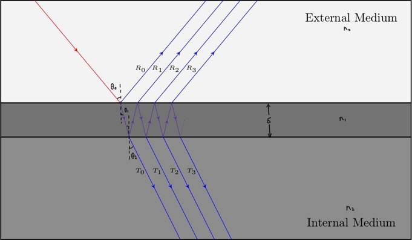
In
project 3, we model light as photons where only the intensity of lights matter.
In order to create the iridescent effects, we model
lights as waves where both their intensity and amplitude matter. Our IridescentBSDF is built on top of MicrofacetBSDF,
and the only term that needs to be replaced is the Fresnel equations.
As
we can see in the diagram, an incoming light wave follows a zigzag pattern
bouncing back and forth between the layer until it gets transmitted into either
the external medium or the internal medium. The interference between the
outgoing light waves is what creates the iridescent effects. We assume that the
media involved are non-absorbing; therefore, by conservation of energy, the
reflection and transmission coefficients must sum up to 1. It is easier to
calculate the transmission coefficient, so we will focus on deriving that.
Step
1: Calculate amplitude
There
are amplitude reflection and transmission coefficients for s-polarized and
p-polarized lights. We assume an equal amount of s-polarized and p-polarized
lights for this project. From now on, we use 𝝆i|j
to denote the amplitude reflection coefficient for a light wave going from
medium i to medium j and 𝝉i|j
to denote the amplitude transmission coefficient for a light wave going from
medium i to medium j. 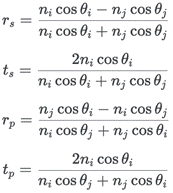
As
we can see from the diagram at the beginning, the amplitude of the kth transmitted wave is
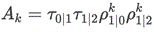
Step
2: Calculate phase
The
phase of light waves is important because waves that are out of phase cancel
each other out while waves that are in phase amplify each other. The phase of
the kth transmitted wave is
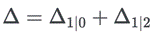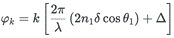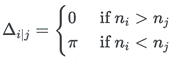
Step
3: Ratio of beam surface area
Since
the transmitted waves are in a different medium than the incident wave, we need
to consider the ratio of beam surface area to make sure energy is conserved.
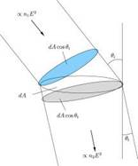
Step
4: Put everything together
Now
that we have the amplitude, phase, and ratio of beam surface area for each
outgoing transmission light wave, we can sum them up to calculate the
transmitted intensity. We sample three light waves at R, G, B wavelengths and
calculate their Fresnel equations.
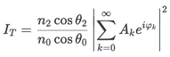
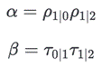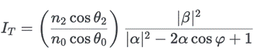
Iridescence
rendering from different viewing directions
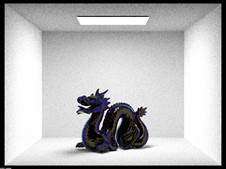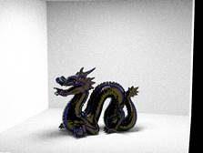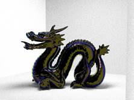
Iridescence
rendering with increasing thin film thicknesses
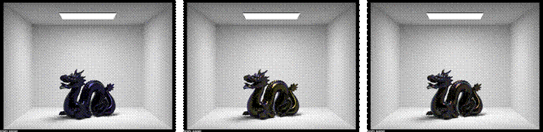
Perlin Noise
Iridescent
materials do not have the same thin film thickness throughout, so we need to
add some randomness so that the thin film varies in thickness across the
object. To get smooth random numbers between 0 and 1, we choose to use Perlin
Noise instead of a random number generator.
We
scaled the original thickness of the thin film by (perlin_noise
+ 40) / 40. This helps reduce the impact that the perlin
noise has on the thickness while still allowing for slight variations in the
thin film thickness.
As
we can see in the following image, the thin film thickness varies throughout
the dragon.
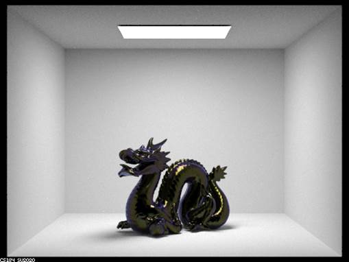
Black Body Radiation
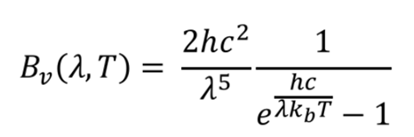
T:
temperature
c:
speed of light
h:
Planck’s constant
k:
Boltzman’s constant
Black
Body Radiation is a method to render scenes while taking into consideration the
temperature of light rays. We incorporated this into our implementation by
using the formula of Planck’s Law above to calculate the RGB wavelengths
separately for a temperature T. We then pass these wavelengths to our thin film
interference function.
Problems Encountered
One
of the problems we encountered in this project was related to black body
radiation. After we calculated the RGB wavelengths based on the temperature,
only the dragon seemed to have the black body radiation effect. The rest of the
scene, like the walls and the light, did not look different from before. We
were sure that our implementation of the black body radiation was correct. We
suspect that the reason for this is because we only added black body radiation
to the iridescent material and none of the other materials. However, due to
time constraints, we were not able to change all other materials into using
waves instead of photons. So we were not able to add
the black body radiation effect to the rest of the materials. If we had more
time to do this, we believe that the rest of the scene will look darker or
lighter based on the temperature.
Lessons Learned
We
were a bit too ambitious when proposing out project idea. We wanted to
implement microfacet rendering, iridescent rendering, black body radiation, and
even soap bubbles, but we did not research enough in the beginning to give a
good estimate of how much work/time each of the tasks would take. We were not
able to get to the stretch goal (soap bubbles) and we were not able to get
black body radiation to fully work. What we learned from this is that we need
to spend more time learning about each of the tasks so that we can allocate
enough time to complete them.
We
also learned how to find and read useful references and research papers. This
helped us a lot with our implementation of the iridescent rendering and black
body radiation.
References
https://sydnie-shea.github.io/iridescentFinal/
https://solarianprogrammer.com/2012/07/18/perlin-noise-cpp-11/
Contributions
Yin
Deng - Implementing microfacet rendering, implementing thin film interference,
wrote respective sections of website
Evelyn
Wu - Implementing perlin noise, implementing black
body radiation, wrote respective sections of website, put together proposal
website and milestone website
Joy
Chang - Implementing perlin noise, implementing black
body radiation, wrote respective sections of website, recorded milestone video
and final video
Yuetian
Tang - Editing Iridescent rendering & microfacet BSDF demonstration slides,
setting & uploading final deliverable webpages